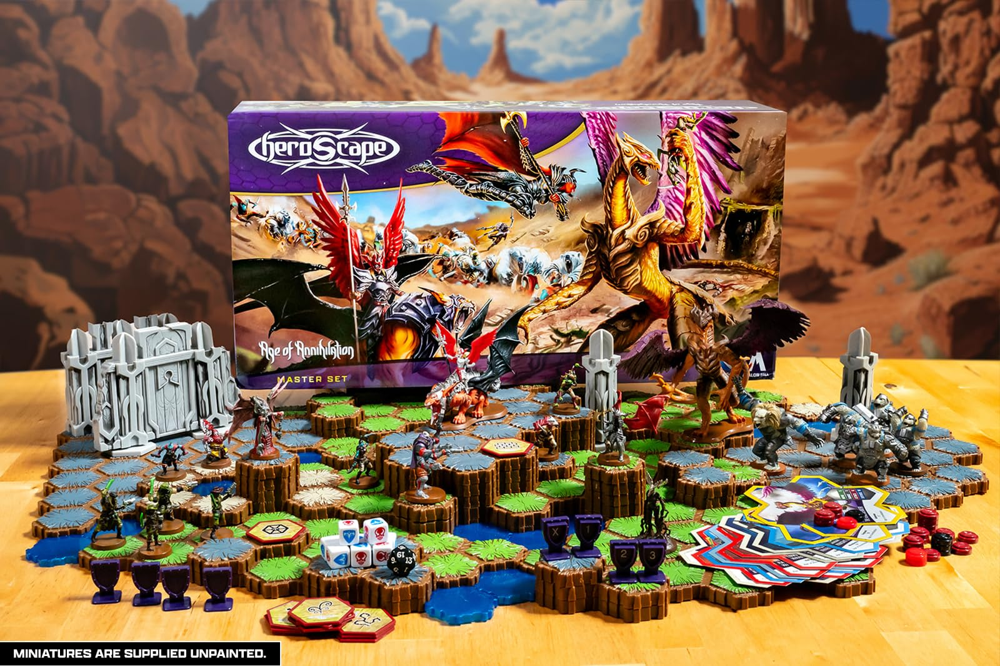
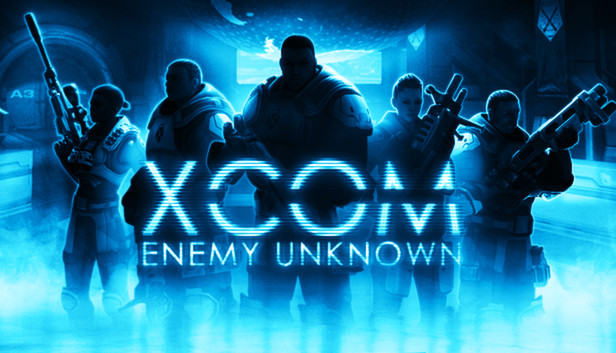

Warfare Woods is a fast-paced strategy game where two factions of cute creatures battle for survival before
winter arrives.
In this forest skirmish, animals armed with weaponry must outsmart and outfight their
opponents to claim territory—or eliminate the competition entirely. The frost is coming, and only one side
can control the woods.
backstory!!
Winter is coming to the Warfare Woods, and the creatures of the forest must prepare. Perchance, to
survive one must acquire resources. The animals of the woods leave their dens and nests, heading out to
look for food. Forming eclectic groups of various species, they help each other in their search for
survival. Eventually, a group discovers stashes of acorns and berries in the woods, but they aren't the
only ones to find this.
Grabbing their favourite firearms, the groups form into armies and begin their campaigns of destruction.
Lobbing rocket logs, firing their conifer rifles, and driving their stoneskin tanks they fight over
these caches of food. Each animal has a role to play in the conflict. The flock of geese fly towards the
enemy, submachineguns in hand (or rather wing) to secure their territory. The tall moose get an ample
view of the forest, perfect for their sniper rifles. The ingenuitive beaver fires their rocket launchers
and helps support the family of mice in their tank.
Each with their own styles of movement, attacks, and special abilities, they set off together to claim
the forest and its resources so they may survive the coming winter and be the victors of the Warfare
Woods.
three game pillars!!
WHAT
Capture three zones in the forest to gain vital resources.
HOW
Outsmart the opposing forest animals through actions, movements, and weapons to eliminate opponents
and take over the forest.
WHY
Stock up on valuable resources before winter sets in!
inspiration!!
Warfare Woods was inspired by first-person shooter video games and strategy games, each contributing
certain mechanics to the final design.
Battlefield 2042
Battlefield inspired our use of distinct unit types, each with different ranges and abilities.
We also incorporated the idea of capture zones, which encourage players to traverse the map and
take control of specific key locations on the board.

Heroscape
We took inspiration from Heroscape's line-of-sight system in order to avoid certain problems with
aiming in a physical board game. In Heroscape, terrain and positioning impact whether a unit can
see and attack its target. This mechanic helped us incorporate obstacles into the board setup
which promote more engaging and strategic gameplay.

XCOM
XCOM's "shot ends turn" mechanic was incorporated into the turn system of Warfare Woods. Similar
to XCOM, this mechanic is used to balance gameplay and encourage more action tradeoffs during a
player's turn.
Fire Emblem
From Fire Emblem, we adapted the grid-based movement and attack distance counting. Because the
units in Warfare Woods are differentiated based on their range, it was important for us to have
a simple yet engaging way to incorporate variable range into a board game. Using tactical
grid-based counting for attack, units are able to have a more dynamic aiming experience and
strategic planning is heavily incentivized.